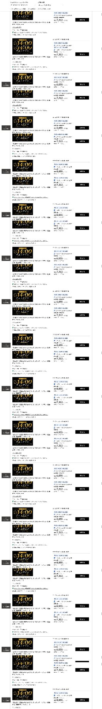
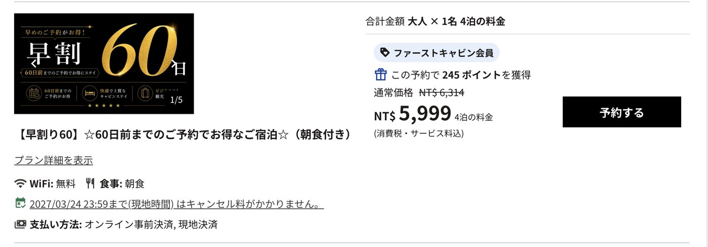
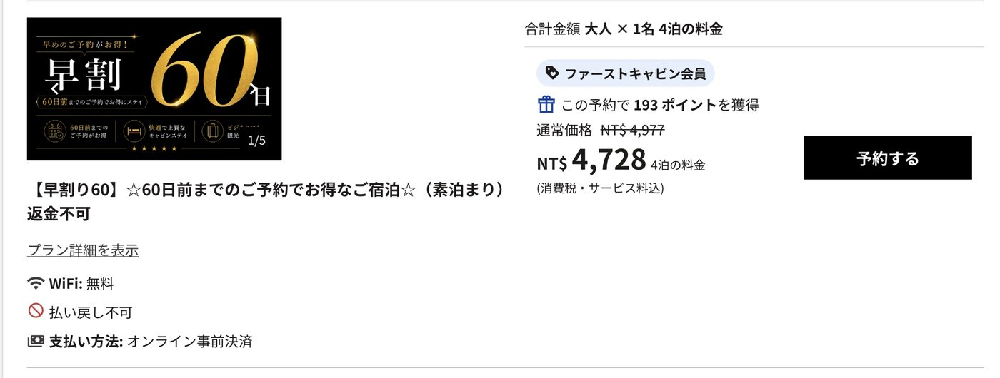
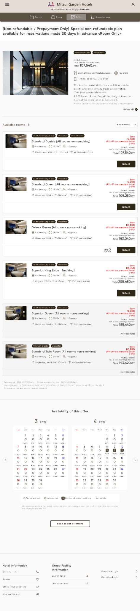
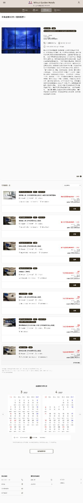
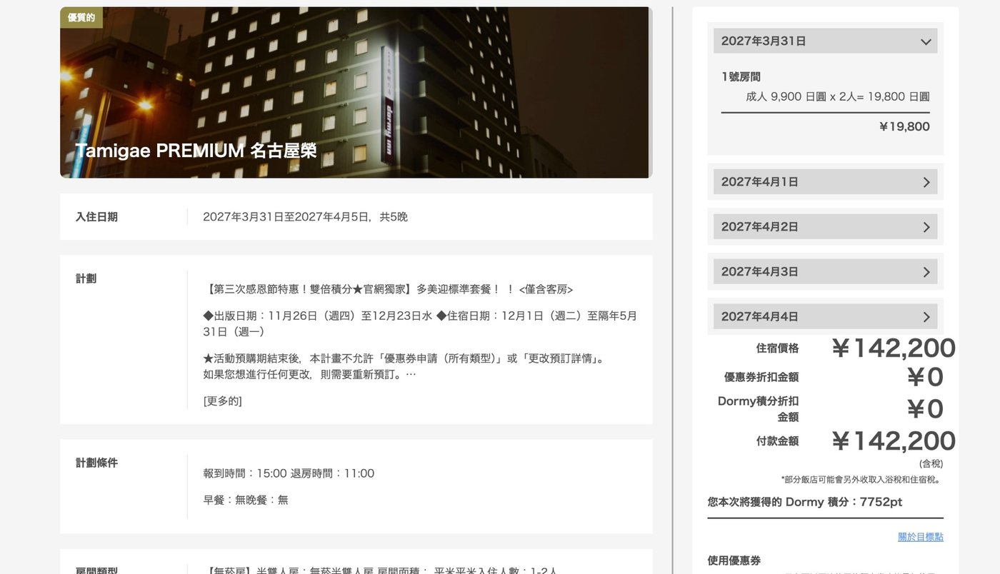
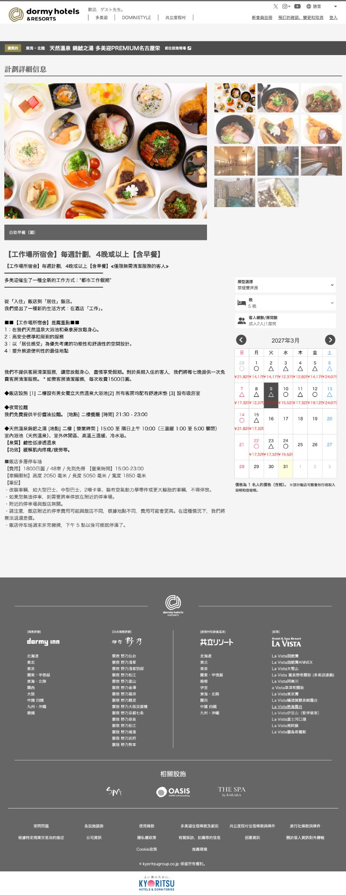

.jpg/960px-Cherry_Blossoms_of_Osakajo_Castle_(1).jpg)
DAY 1 · 4/1（四）
Premium 大散步券高級票
¥7,300 ／人・平日購買2張。青春之丘、動動力森林及魔女之谷三棟建築是第一天優先目標。大倉庫預約首選 13:00，視時間短暫參觀。
TRIP READINESS
選擇每個項目的進度，只有「已確認」計入完成數。資料僅存於這個瀏覽器，不會同步給旅伴。
UP NEXT
依台灣時間排序；過期未完成仍保留。完成後顯示下一項，條件式提醒須依實際訂單確認。此區不會發送系統通知。
ITINERARY
| 日期 | 行程 | 住宿 | 安排備註 |
|---|---|---|---|
| 3/27六 | 大阪會合 | 大阪 | 依抵達時間安排；Ken 若 3/26 抵達則多住一晚 |
| 3/28日 | AnimeJapan／我的英雄學院展／賞櫻 | 大阪 | 依票券及花況選擇 |
| 3/29一 | 日本環球影城 USJ | 大阪 | 預留全天 |
| 3/30二 | 大阪自由日 | 大阪 | 購物、美術展或賞櫻 |
| 3/31三 | 大阪→名古屋 | 名古屋 | 新幹線約 50–60 分 |
| 4/1四 | 吉卜力公園 Day 1 | 名古屋 | Premium：青春之丘、動動力森林、魔女之谷 兩日攻略與購票提醒 |
| 4/2五 | 吉卜力公園 Day 2 | 名古屋 | Standard：大倉庫、魔法之里、魔女之谷補逛 兩日攻略與購票提醒 |
| 4/3六 | 磁浮鐵道館＋購物 | 名古屋 | 金城埠頭、榮、大須 備選：犬山祭・試樂祭（若選此日，鐵道館需另排） |
| 4/4日 | 名古屋自由日 | 名古屋 | 原畫展最後一天；若 Ken 大阪返台早班，考慮提前移動 優先備選：犬山祭・本樂祭（與原畫展擇一或分配時間） |
| 4/5一 | 共同旅程結束 | — | Ken 返台；Jaren 離開名古屋 |
TICKETS
尚未匯入；購票狀態待確認。
僅儲存於此瀏覽器，不會上傳或寫回 HTML。
GHIBLI PARK · 2027/4/1（四）— 4/2（五）｜Jaren × Ken。以兩天完整走訪五大園區為目標，優先安排動畫建築內部、經典場景、展覽與購物。以下為建議動線，非已訂票行程。
依現行海外售票制度推算，4月門票提前兩個月於10日開賣，非抽籤。成功付款、取得訂位確認才算完成。官方目前已公告 2027/2 的門票於 2026/12/10 販售；2027/4 的開賣日及營業日仍待正式公告。
2/1 先核對公告；2/10 12:30（台灣）準備登入、付款及日期時段，12:45 留意排隊頁面，13:00 依官方流程搶票。
行事曆檔需自行匯入，並不代表已設定通知；售票時間若變更請自行更新。網路文章有提及每月1日開始抽選，但目前海外官方頁面仍明列提前兩個月10日開賣。暫不採用抽籤日期，也沒有適用於現行一般海外票的抽籤結果公布日。最終以4月官方公告為準。
購買2張。青春之丘、動動力森林及魔女之谷三棟建築是第一天優先目標。大倉庫預約首選 13:00，視時間短暫參觀。
購買2張。大倉庫預約首選 10:00（若當天9:00開園則可選9:00），之後魔法之里、魔女之谷補逛。
| 參觀範圍 | Premium | Standard |
|---|---|---|
| 吉卜力大倉庫 | 含（指定入場） | 含（指定入場） |
| 青春之丘・地球屋 | 含 | 不含 |
| 動動力森林・小月小梅的家 | 含 | 不含 |
| 魔法之里 | 含 | 含 |
| 魔女之谷戶外區 | 含 | 含 |
| 霍爾城堡內部 | 含 | 另購 ¥1,000 |
| 歐其諾家（琪琪的家） | 含 | 另購 ¥400 |
| 魔女之家 | 含 | 另購 ¥400 |
Standard 的建築加購券須當日依規定先領整理券，再於指定時段購買，數量有限。兩天 Premium 為每人 ¥14,600；兩天 Standard 為 ¥6,600，但缺少兩個園區，不能完成五區目標。週末／國定假日票價分別為 ¥7,800、¥3,800；2027實際票價以官網為準。
《心之谷》地球屋、古董鐘錶與小提琴工房；《貓的報恩》貓咪事務所，從外觀看迷你家具。
官方照片與地圖
《龍貓》小月與小梅的家、昭和生活細節、森林散步及山頂龍貓造景。龍貓木造設施內部限兒童。
官方照片與地圖
霍爾的移動城堡、琪琪的家、魔女之家；麵包店、街景、商店及旋轉木馬。建築內部第一天優先。
官方照片與地圖
無臉男電車拍照、天空之城機器人、借物少女、中央階梯、三大展覽、短片及紀念品商店。
官方照片、展覽與地圖
《魔法公主》達達拉場、邪魔神造景，視受理情況參加五平餅體驗（另付費）。
官方照片與地圖
大倉庫 Cinema Orion 目前公告《A Night in the Valley of Witches》（約14分鐘）預計放映至2027年6月左右，4/2 建議留時間觀賞；實際節目以當日公告為準。
以下按平日10:00–17:00試排，若春假期間提早至9:00開園，優先提早出門並增加排隊緩衝。所有跨區步行、接駁及排隊時間均為估算，不是指定入場時間。
| 08:00–09:15 | 名古屋出發，搭地鐵與 Linimo，抵達北口。 |
|---|---|
| 09:15–10:00 | 步行至青春之丘、準備排隊。 |
| 10:00–11:00 | 青春之丘：地球屋與貓咪事務所；首次驗票領手環。 |
| 11:00–11:30 | 步行或依接駁班次前往動動力森林。 |
| 11:30–12:40 | 小月小梅的家、龍貓森林。 |
| 12:40–13:15 | 簡餐、移動；視排隊進度調整。 |
| 13:15–13:40 | 大倉庫短暫參觀（13:00票）；若進度落後，直接略過。 |
| 13:40–17:00 | 移動至魔女之谷，優先排霍爾城堡、歐其諾家、魔女之家，再逛商店。 |
第一天不能犧牲三個 Premium 重點區。大倉庫即使沒進去，也可在第二天完整遊覽；魔女之谷建築請盡量於16:00前完成主要排隊。
| 08:00–09:15 | 名古屋市區出發，抵達公園北口。 |
|---|---|
| 09:15–10:00 | 前往大倉庫排隊，準備QR碼與護照。 |
| 10:00–11:30 | 無臉男、經典動畫場景拍照（先排熱門場景）。 |
| 11:30–13:15 | 三大展覽、天空之城、借物少女、Cinema Orion 短片。 |
| 13:15–14:00 | 大倉庫商店、咖啡或簡餐，離開前完成購物。 |
| 14:00–14:30 | 午餐／移動，依現場等待調整。 |
| 14:30–15:30 | 魔法之里；五平餅體驗視受理截止時間決定。 |
| 15:30–17:00 | 魔女之谷補拍街景、選購商品及麵包。 |
Standard 大倉庫與魔法之里離場後不能再入場；請在離場前完成所有展覽與購物。魔女之谷可再入場。
兩天共同目標是走完五區並參觀主要成人可進入的建築；春假人潮、天候、休止及排隊可能影響完成度。若第1天錯過魔女之谷建築，第2天可早上先領限量加購整理券，但需要調整大倉庫入場時段，且不能保證取得。
名古屋站搭地鐵東山線至藤丘，轉 Linimo 至愛・地球博記念公園站（2號出口）。單程約50–65分鐘、¥700–800（暫估）。園內免費接駁車可視班次使用；以官方地圖確認停靠點。另可查名鐵巴士直達班次。
| 項目（新台幣） | 每人 | 兩人 |
|---|---|---|
| 兩天門票（匯率0.22） | 2,332 | 4,664 |
| 兩天往返交通 | 700 | 1,400 |
| 餐飲與點心 | 1,200 | 2,400 |
| 額外遊樂體驗 | 500 | 1,000 |
| 紀念品購物（可調整） | 5,000 | 10,000 |
| 預算合計 | 9,732 | 19,464 |
另留售票手續費及彈性預備金；此為兩天的局部預算，不應與全旅程相同項目重複加總。
STAY SELECTOR
大阪 4 晚・名古屋 5 晚｜兩人共同住宿
各住一艙・大浴場・含早餐方案可取消至 3/24 台灣 22:59
3/31–4/5・兩人一房五晚。選擇是否加購早餐，立即比較總價。
高樓景觀・名古屋站
¥109,250Queen 雙人房・室內大浴場
詳細房型與報價 →天然溫泉・伏見／榮
¥142,200半雙人房・免費夜鳴拉麵
詳細房型與報價 →雙床優先・含雙人早餐・尚未取得報價
| 比較項目 | 三井花園 | Dormy Inn |
|---|---|---|
| 房間與景觀 | 高樓城市景觀 雙床約24㎡ | 一般市景 雙床約22–27㎡ |
| 泡湯 | 室內大浴場 | 天然溫泉、桑拿、冷水池、戶外浴池 |
| 早餐單買 | ¥3,300／人 | ¥2,500／人 |
| 免費宵夜 | 無同類常態服務 | 拉麵、冰棒、乳酸菌飲料 |
| 交通 | JR、新幹線 | 榮、大須生活圈 |
點選上方偏好，看看哪間比較適合。
報價為2026/11/25–27歷史紀錄，未訂房；早餐為單買參考價，不是含早餐方案報價。房型面積及設施沿用比較資料，尚未逐項重新核實。未扣折價券、積分或額外稅費。
SHORTLIST
全部為先前截圖報價，2026/11/25–27 的研究紀錄，非即時房價；First Cabin 艙型與日期需再確認。三井花園與 Dormy Inn 以 0.22 匯率估算。選擇狀態僅為規劃註記，並非訂房。
兩人共同住宿比較區，持續補充飯店。大阪 3/27–3/31（4晚）；名古屋 3/31–4/5（5晚）。以下僅列候選，尚未訂房；原預算為每人每晚 NT$2,000，兩人合計每晚 NT$4,000（一般飯店可共房；單人艙需各訂一艙）。
本深度比較沿用附件的 0.21 試算匯率；原網站其他報價比較維持 0.22，兩者均非即時匯率。以下設施與服務為附件參考資料，未重新查證，2027 年以官網為準。
| 項目 | Dormy Inn PREMIUM 名古屋榮 | 三井花園飯店名古屋普米爾 |
|---|---|---|
| 定位 | 溫泉休閒型商務飯店 | 高級都會景觀飯店 |
| 位置 | 伏見、榮商圈 | 名古屋車站周邊 |
| 基本雙人房 | 約15.1～16.5㎡ | 約18.5㎡ |
| 雙床房 | 約22～27㎡（依房型） | 約24㎡（依房型） |
| 客房景觀 | 一般市區景觀 | 高樓層城市景觀 |
| 天然溫泉 | 有，運送式天然溫泉 | 非天然溫泉大浴場 |
| 露天浴池 | 有戶外浴池 | 無 |
| 桑拿、冷水池 | 有 | 無 |
| 大浴場 | 15:00～翌日10:00 | 15:00～翌日09:00 |
| 早餐 | 日式自助餐、名古屋特色料理 | 高樓景觀餐廳、特色料理 |
| 早餐參考單價 | ¥2,500／人 | ¥3,300／人 |
| 免費夜鳴拉麵 | 有 | 無同類常態服務 |
| 免費冰棒、乳酸菌飲料 | 有 | 無同類常態服務 |
| 自助洗衣 | 有 | 有 |
| 退房 | 11:00 | 11:00 |
| 長住適合度 | 較高 | 視房價與交通需求而定 |
房型面積、早餐價格及部分服務沿用前次比較的參考資料，尚未逐項重新核實；2027年實際供應以官網為準。
| 設施／服務 | 參考時間 |
|---|---|
| 大浴場 | 15:00～翌日10:00 |
| 桑拿 | 15:00～翌日01:00、05:00～10:00 |
| 免費冰棒 | 15:00～翌日01:00 |
| 免費夜鳴拉麵 | 21:30～23:00 |
| 免費乳酸菌飲料 | 05:00～10:00 |
| 早餐 | 06:30～09:30（最後入場09:00） |
天然溫泉、桑拿、冷水池與戶外浴池適合每天遊玩後放鬆。天然溫泉水使用於室內浴池，並非所有浴池均為天然溫泉。免費服務時間須以入住時公告為準。
比較結論： 喜歡泡湯、桑拿及夜間免費服務，Dormy Inn 更有優勢；重視空間設計與都會飯店氛圍，三井花園較吸引人。
兩人連住五晚，建議優先選擇22㎡以上的雙床房，保留行李箱及走動空間。Dormy Inn 的較大雙床房值得優先追蹤；三井花園的優勢則是高樓景觀、家具及室內設計。實際房型與面積須以所選方案為準。
以下以先前比較的早餐單買參考價格試算，並非指定日期含早餐房價。
| 項目 | Dormy Inn | 三井花園 |
|---|---|---|
| 每人每日 | ¥2,500 | ¥3,300 |
| 兩人五天 | ¥25,000 | ¥33,000 |
| 台幣估算 | NT$5,250 | NT$6,930 |
兩人五天早餐價差為 ¥8,000（約 NT$1,680）。若入住方案已包含早餐，不應再重複加計早餐費。
| 需求 | 較有優勢 |
|---|---|
| JR、新幹線、機場交通 | 三井花園 |
| 名古屋車站周邊購物 | 三井花園 |
| 榮商圈、晚餐、夜間活動 | Dormy Inn |
| 大須商店街、市區長住 | Dormy Inn |
| 吉卜力公園 | Dormy Inn 可利用東山線往藤丘轉乘，實際依路線判斷 |
假設 Dormy Inn 能以兩人五晚含稅含早餐 ¥110,000 訂到，以下為三井花園同等條件的主觀比較門檻：
| 三井花園五晚總價 | 建議 |
|---|---|
| ¥110,000以下 | 兩間都值得考慮 |
| ¥110,001～120,000 | 視房型與景觀決定 |
| ¥120,001～130,000 | 傾向 Dormy Inn |
| ¥130,001～150,000 | 優先 Dormy Inn |
| ¥150,000以上 | Dormy Inn 的價格吸引力更高 |
Dormy Inn 目標價：¥110,000（約 NT$23,100）
以上是預算門檻與假設試算，並非已確認報價。
| 項目（滿分10分） | Dormy Inn | 三井花園 |
|---|---|---|
| 飯店高級感 | 7.5 | 9.5 |
| 客房舒適度 | 8 | 9 |
| 大浴場與泡湯 | 9.5 | 7 |
| 早餐 | 9 | 9 |
| 免費附加服務 | 10 | 6.5 |
| 交通便利性 | 8.5 | 9.5 |
| 五晚長住適合度 | 9.5 | 8.5 |
評分為依本次住宿需求所作的主觀判斷，非訂房平台評價。
優先考慮 Dormy Inn PREMIUM 名古屋榮含早餐長住雙床房。若五晚總價能控制在 ¥110,000 以內，泡湯、桑拿、免費宵夜與早餐的整體價值相當有吸引力。若三井花園價格接近，且更重視高樓景觀或JR交通，則值得改選。
訂房前確認：
目前尚未取得指定日期的 WORK PLACE DORMY 含早餐長住方案可核實報價；已取得的感恩節純住宿報價為 ¥142,200，與目標方案條件不同。清掃及取消條件仍待確認。
整理日期：2026/11/27。以先前對話比較為基礎，補充查閱大浴場與早餐資料；非完整即時訂房調查。
| 區域／飯店 | 住宿晚數 | 優先房型 | 兩人總價 | 每人每晚 | 取消條件／狀態 |
|---|---|---|---|---|---|
| 大阪｜First Cabin 西梅田 | 4 | 各自一艙・優先頭等艙（報價艙型待確認） | NT$9,456 純住宿／NT$11,998 含早餐 | NT$1,182／約 NT$1,500 | 純住宿不可退款；含早餐3/24前免費取消・未訂 |
| 名古屋｜三井花園 PREMIER | 5 | Standard Queen | ¥109,250 ≈ NT$24,035 | NT$2,404 | 不可退款・未訂 |
| 名古屋｜Dormy Inn PREMIUM 名古屋榮 | 5 | 禁菸半雙人房（另追蹤 Twin／Queen） | ¥142,200 ≈ NT$31,284（純住宿） | 約 NT$3,128 | 取消條件待確認・未訂 |
後續每間飯店以相同欄位比較：入住日期、交通位置、床型、房間大小、兩人含稅總價、每人每晚、早餐、付款／取消條件及查價來源。
| 大阪4晚＋名古屋5晚 | 兩人總價 | 每人約 |
|---|---|---|
| First Cabin 純住宿＋三井花園 Queen | NT$33,491 | NT$16,746 |
| First Cabin 含早餐＋三井花園 Queen | NT$36,033 | NT$18,017 |
| 含早餐＋三井花園 Queen（假設折券） | NT$34,383 | NT$17,192 |
| First Cabin 含早餐＋Dormy Inn 純住宿 | NT$43,282 | NT$21,641 |
| First Cabin 純住宿＋Dormy Inn 純住宿 | NT$40,740 | NT$20,370 |
三井花園以¥109,250、匯率0.22試算；¥7,500折扣券尚未確認適用。Dormy Inn 感恩節純住宿已報價 ¥142,200；長住含早餐方案仍待查。以上皆未訂房，不含可能另收的住宿稅及匯差。
高級膠囊旅館，位於大阪福島區，阪神福島站步行約2分鐘，大阪站亦在步行範圍。適合白天出遊、晚上休息及控制預算。設有共用大浴場、淋浴間、休息區及行李寄存服務。
| 項目 | 頭等艙 | 商務艙 |
|---|---|---|
| 面積 | 4.4㎡ | 2.5㎡ |
| 床寬 | 120cm | 100cm |
| 入住人數 | 1人 | 1人 |
| 空間 | 床側更衣空間、側桌 | 以床位為主 |
| 衛浴 | 共用 | |
官網標示艙門不可上鎖，分男女區域，以門卡控管；可鎖貴重物品箱。連住建議優先考慮頭等艙。
| 60天早鳥會員價 | 純住宿 | 含早餐（優先） |
|---|---|---|
| 一般價／每人4晚 | NT$4,977 | NT$6,314 |
| 會員價／每人4晚 | NT$4,728 | NT$5,999 |
| 每人每晚 | NT$1,182 | 約 NT$1,500 |
| 兩人各一艙4晚 | NT$9,456 | NT$11,998 |
| 早餐 | 不含 | 含早餐 |
| 取消條件 | 不可退款 | 2027/3/24 日本23:59前免費取消（台灣22:59） |
| 付款 | 線上預付 | 線上預付或現場付款 |
| 會員點數／單筆 | 193點 | 245點 |
| 較原兩人預算NT$16,000節省 | NT$6,544 | NT$4,002 |
新截圖取代原先¥6,655／¥7,312的條件式試算。消費稅、服務費已含；住宿稅是否另計及最終付款幣別須核對。兩人價格假設兩艙皆可取得相同會員價。兩個方案是否為相同艙型尚待確認。
交通：阪神福島站約2分鐘；大阪站可步行。前往USJ可使用JR福島站，往南港動漫展需轉車；3/31搭JR往新大阪轉新幹線。地址：大阪市福島區福島5丁目2番30號。
注意事項：各艙僅限本人，不能進入彼此的艙內；聊天請使用公共休息區。隔簾隔音有限，建議耳塞；大浴場及廁所共用。大量購物與大行李須先確認寄存空間。
入住：官網一般標示14:00入住、10:00退房，依方案為準；連住訂單只需最後一天退房。可於住宿當日入住前及退房後寄存行李，細節以飯店規定為準。
訂房：官網先查3/27–3/31、兩位成人各一艙的男性區頭等艙，再比較商務艙與可免費取消的一般雙床房。可請飯店安排相鄰艙位，但不保證。確認早餐、付款、取消政策、住宿稅及總價再下單。

保留使用者提供的原始截圖；細字解析度有限。


名古屋站附近，高樓層景觀及公共大浴場；適合以名古屋為據點，前往吉卜力公園、磁浮鐵道館與犬山。優先考慮 Standard Queen（若兩人可接受共用一張床）；若需要獨立床位，應另外追蹤 Twin 房型。
2026/11 查價紀錄；日圓為兩人一房、五晚純住宿總價。30天方案截圖顯示稅金及服務費已含；60天早鳥亦以畫面總價登錄，日期與完整訂房條款需於結帳前再次確認。兩張截圖均標示約5%折扣，不重複扣減。
| 房型 | 30天預付 不可退款 | 60天早鳥 取消條件待確認 |
|---|---|---|
| 標準雙人房（部分無景觀） | — | ¥125,400 |
| Standard Double | ¥107,540 | ¥127,680 |
| Standard Queen（優先） | ¥109,250 | ¥130,150 |
| Superior King | ¥200,450 | ¥237,500 |
| Standard Twin | ¥193,420（無空房） | ¥228,760（無空房） |
只列主要比較房型；其他房型請查看下方原始截圖。Queen 相較不可退款 Double 五晚僅多 ¥1,710（約 NT$376／房），平均每人每晚多約 NT$38。60天早鳥 Queen 比不可退款 Queen 多 ¥20,900（約 NT$4,598／房）。
先前研究記錄：代碼 5NFRHP；單筆同房連住5晚、滿¥50,000。有效期、2027入住日期、房價方案是否可併用尚未確認，不能視為已折抵。若可用，Queen 理想總價 ¥101,750，約 NT$22,385。
先前查得早餐參考價每人 ¥3,300，兩人一天約 NT$1,452（0.22）。可挑一天體驗，吉卜力兩天可視出發時間另安排。2027價格以飯店公告為準。
優先找可免費取消的 Queen 房型，核對取消截止日期、是否預付及含稅總價。60天早鳥不代表必然可免費取消。
重新比價，確認早鳥方案截止日期及飯店時區規則。
機票及門票確認後，再考慮改訂不可退款優惠；先確認新訂單成功，再依原訂單條件取消。
留意30天預付方案期限；第一張截圖明列預訂完成即收取100%取消費。不確定行程時，不宜先鎖定不可退款。
上述日期是以3/31入住倒推的檢查點，不是飯店保證截止時間。官網與 Agoda、Trip.com、Booking.com、一休等平台須按相同房型、入住人數、稅費、早餐及取消條件比價；目前尚未取得其他平台同條件報價。
| 日圓 | 判斷 |
|---|---|
| ¥100,000 以下 | 非常划算 |
| ¥100,000–110,000 | 理想價格 |
| ¥110,000–120,000 | 可以接受 |
| ¥120,000–135,000 | 可取消方案暫時保留價（須核對條款） |
| ¥135,000 以上 | 建議比價其他飯店 |
試算只作預算規劃，未含匯差及刷卡手續費；其他折抵必須確認可疊加。


位於伏見與榮之間，距伏見站2號出口步行約5分鐘、榮站8號出口約8分鐘（官方交通頁）。逛榮商圈、大須及市中心較方便；往名古屋站搭車需多一段地鐵或其他接駁。與三井花園比較時，應把每日往返吉卜力公園、犬山及鐵道館的交通一併考量。
| 項目 | 最新報價條件 |
|---|---|
| 入住／退房 | 2027/3/31–4/5；15:00 入住、11:00 退房 |
| 每人五晚／每人每晚 | ¥71,100／¥14,220（約 NT$15,642／3,128） |
| 首晚 3/31 | ¥19,800（兩人）；其餘各晚明細未展開 |
| 早餐／晚餐 | 均不含 |
| 販售期間 | 2026/11/26–12/23 |
| 積分／折扣 | 預計回饋 7,752 pt；本次優惠券及積分折抵均 ¥0 |
| 條款 | 活動預購期結束後不可申請優惠券或更改預訂詳情；取消及付款條件未顯示，待確認。畫面總價含稅，可能另收浴稅及住宿稅。 |
相較三井花園 Queen 不可退款 ¥109,250，多 ¥32,950（約 NT$7,249，30.2%）；相較60天早鳥 ¥130,150，多 ¥12,050（約 NT$2,651）。積分非現金折抵，不從本次價格扣除。長住含早餐方案仍待報價。

符合本次五晚住宿。官網早餐現行參考價成人每人¥2,500，06:30–09:30（最後入場09:00），有鰻魚飯、土手煮等名古屋特色料理。若兩人五天皆吃，單購參考價共¥25,000；實際2027年價格待確認。
男女分開大浴場、外氣浴、水浴及桑拿；15:00–翌日10:00，桑拿01:00–05:00暫停。免費夜鳴拉麵21:30–23:00（截圖）。溫泉入浴限制依官方規定。
截圖顯示每7晚免費清掃一次；如需清掃，每次¥1,500。五晚通常沒有例行客房清掃，毛巾更換與垃圾處理方式、是否需自行領取，訂房前確認。
截圖選擇禁菸雙床房，優先追蹤；亦比較 Queen（17.8㎡）、一般 Twin（22–27㎡）與 Compact Twin（17.8㎡）。此長住方案的含稅總價、床型、付款時點與取消期限仍待確認；另有下列感恩節純住宿報價。
| 比較項目 | 三井花園 Queen | Dormy Inn 長住含早餐 |
|---|---|---|
| 目前報價 | ¥109,250／純住宿、不可退款 | 待查 |
| 兩人五晚基準 | 約NT$24,035 | 原住宿預算NT$20,000（約¥90,909） |
| 早餐 | 另付¥3,300／人（參考） | 方案已含；現行單購¥2,500／人 |
| 若每天都吃飯店早餐 | ¥142,250（未折券） | 待報價；與左欄同條件比較 |
| 主要優勢 | 名古屋站、高樓景觀 | 天然溫泉、宵夜、早餐、榮商圈 |
| 注意事項 | 不可退款、會員券待確認 | 不每日清掃、取消條件待查 |
以匯率0.22估算；若Dormy含早餐五晚總價落在¥100,000–110,000（約NT$22,000–24,200），值得優先研究。此為主觀比價目標，不是實際報價。若早餐吃得少，應與三井純住宿加實際早餐支出比較。下次查價請固定3/31入住、4/5退房、2人1房、5晚，記錄含稅全額而非日曆上的每人單日價格，並核對取消條款。

2026/11/25 使用者截圖報價；金額為新台幣，非鎖定票價。回程航班與行李額須再確認。
| 選項 | 航線及日期 | 票價 | 注意 |
|---|---|---|---|
| K1 | 3/27 台中→神戶；4/5 名古屋→台中 | 待查 | 最便利；虎航回程 IT779 13:45–16:05，$11,999；去程待查 |
| K2 | 3/27 桃園→大阪 07:00–10:25；4/5 名古屋→台中 | $20,998 | 虎航兩單程合計；須赴桃園 |
| K3 | 3/27 桃園→大阪 14:40–17:55；4/5 名古屋→台中 | $18,298 | 虎航兩單程合計；抵達較晚 |
| K4 | 3/26 桃園→大阪；4/5 大阪→桃園 | $12,949 起 | 最低價未顯示完整組合；增加一晚住宿、名古屋折返及台灣接駁 |
| 航空公司 | 3/26 去程 | 來回報價 |
|---|---|---|
| 捷星日本 | 18:15–21:45 | $14,139 |
| 樂桃 | 13:40–17:10 | $14,886 |
| 虎航 | 14:40–17:55 | $15,107 |
Google Flights ｜ 星宇航空 ｜ 台灣虎航
| 區間 | 車程 | 單程／每人 |
|---|---|---|
| 大阪→環球影城 | JR 約 15–25 分 | 約 ¥200–300 |
| 大阪→近江八幡（滋賀備選） | JR 約 65–80 分 | 約 ¥1,500–1,800 |
| 近江八幡→彥根（滋賀備選） | JR 約 15–25 分 | 約 ¥400–600 |
| 彥根→名古屋（滋賀備選） | 普通列車約 75–100 分 | 約 ¥1,500–1,900 |
| 新大阪→名古屋（直接移動） | 新幹線約 50–60 分 | 約 ¥6,000–7,000 |
| 名古屋→吉卜力公園 | 地鐵＋Linimo 約 50–65 分 | 約 ¥700–800 |
| 名古屋→磁浮・鐵道館 | 青波線約 24 分 | ¥360 |
| 名古屋→中部國際機場 | 名鐵約 30–50 分 | 約 ¥1,000–1,500 |
| 名鐵名古屋→犬山（備選） | 特急約25–30分 | 約 ¥630（2026年參考；指定席另計） |
未包含各景點門票、飯店、機票、市區交通、部分當地巴士與行李托運。滋賀可能花開未滿；彥根櫻花歷史平均較大阪晚，3/31 賞花不能保證滿開。
本次 3/27～4/5 共同旅行會碰到的大型動漫活動。優先核對已公布日期；較熱門的活動可以取代原本自由賞櫻／購物時段。以下圖片是場館或歷年活動實景，未必是 2027 年當日展況。
大阪南港 ATC Gallery（ITM 棟 2F），2027/3/5～3/28，10:00–19:00（最後入場18:00，日本時間）。3/27、3/28 為最後週末，必須購買指定日時券，平日期間有效券不適用。
| 票種 | 每人（含稅） | 內容 |
|---|---|---|
| 一般成人票 | ¥2,500 | 入場及隨機特典卡 |
| 限定周邊票 | ¥4,500 | 入場、隨機特典卡、限定壓克力展示板 |
兩張一般票 ¥5,000；一張一般票加一張周邊票 ¥7,000（需確認能否同單混搭）；兩張周邊票 ¥9,000。另計可能的售票及取票手續費。優先取得同日時的兩張票。
以下均為台灣時間（日本時間快一小時）。
| 項目 | 第二次先行抽籤 | 第三次先行抽籤 |
|---|---|---|
| 申請開始 | 2026/11/6 10:00 | 2026/12/4 10:00 |
| 申請截止 | 12/2 22:59 | 12/13 22:59 |
| 抽籤日 | 12/7 | 12/18 |
| 結果公布 | 12/8 17:00 起陸續公布 | 12/19 17:00 起陸續公布 |
| 付款截止 | 12/10 22:59 | 12/21 22:59 |
一般 Pia 會員以日本居民為對象；中文頁面不代表海外居民可直接參加抽籤。不建議借用地址或門號註冊。請日本朋友以本人帳號確認下列條件：
展覽官方公開規則未明文要求一般成人購票者本人到場，但不代表代購已獲允許。Pia 實際申請表單目前無法直接核對；紙本及取票號碼是否適用本展也待確認。先取得官方或申請頁確認再付款。
| 優先 | 候選時段 | 理由 |
|---|---|---|
| 1 | 3/28（日）15:00 | 上午保留 AnimeJapan |
| 2 | 3/28 14:00 | 兩展搭配，上午較緊湊 |
| 3 | 3/28 16:00 | 上午彈性較大 |
| 4 | 3/27 16:00～17:00 | 須先確認兩人抵達時間 |
3/28 暫定搭配：09:00–13:30 AnimeJapan（INTEX Osaka）→ 13:30–14:30 午餐及移動 → 15:00–18:00 我英展及購物。依票面集合時間、舞台節目及人潮調整；不強制兩展同日，也不取代目前自由賞櫻備選。
ちょっとお願いがあるんだけど、来年3月に友達と大阪へ旅行する予定で、「僕のヒーローアカデミア」TVアニメ10周年記念展「OUR HERO」に行きたいと思っています。 台湾在住なので、チケットぴあの先行抽選に自分で申し込むのが難しそうです。もし可能であれば、チケットの申し込みを手伝ってもらえないでしょうか？ 希望日時：2027年3月28日（日）15時 希望枚数：大人2枚 会場：大阪南港ATC Gallery 第2次先行抽選の締切：2026年12月2日23:59（日本時間） 申し込みの前に、購入者本人が当日会場に行かなくても、台湾からの友人2人だけで入場できるか、紙チケットで受け取れるかを確認してもらえると助かります。 チケット代と手数料はもちろんこちらで負担します。 よろしくお願いします！
大阪展官方售票時程及注意事項 ／ Ticket Pia 中文售票頁 ／ Pia 官方網站
2026/11/26 核對展覽官網；Pia 活動頁面重新導向，未能確認登入後的實際抽籤條款。本文為購票規劃，非已訂票或代購成功紀錄。
2027 年首次移師大阪，INTEX Osaka 2～6 號館，3/27、3/28 每日 9:00～17:00，最後入場 16:30。參展企業、舞台與周邊販售陸續公布；近年 AnimeJapan 曾有超過 15 萬人到場，但不等於 2027 年的預估人數。
日本大型動漫展首次移師大阪。動畫製作公司展區、新作情報、限定商品、聲優舞台與活動，是這次旅行特別值得把握的機會。
活動官網與最新售票資訊2027/3/5（五）～3/28（日）
動畫10年紀念特展，包含製作資料、立體展示、影像與角色攝影區。Ken 能共同參觀的僅剩 3/27、3/28。
活動官網與最新售票資訊官方確認名古屋場有 400 件以上北條司親筆原畫、資料、影片及攝影區；大阪場曾有 100t 鐵鎚、留言板和 Cat’s Eye 場景，名古屋是否完整沿用請以現場公告為準。
展出超過400件北條司原畫，另有攝影區、珍貴資料與特別影像。就在榮／矢場町商圈，逛潮牌時可以順道安排。
活動官網與最新售票資訊2027/3/29（一）原訂 USJ 參觀日
當季有《名偵探柯南》、《美少女戰士》、《藥師少女的獨語》、《鋼之鍊金術師》、《黃泉使者》等合作。各作品檔期與體驗方式並不完全相同。
活動官網與最新售票資訊票價、抽選、加購票與時段依官方販售頁面為準；除場館實景外，活動主視覺／動漫版權圖未納入本旅行手冊。
除了動漫，這次也碰得到不少藝術展。每張照片均為美術館或場館的真實攝影，並非展覽作品的現場紀錄。以下全是候選行程，不改動共同旅行暫定日期。
以下景點全部是備選，不會自動加進固定行程。每一張都搭配真實照片，並標明適合在哪一天安排；有些新景點需要門票或提前抽選。
上午先逛城下町，白天欣賞車山巡行、機關人偶奉納與轉向技藝；傍晚起提燈陸續點亮，夜間巡行別具氣氛。2026年兩日均有夜間巡行，2027年確切時刻、路線及雨天安排以官方公告為準。
| 候選日 | 安排建議 | 取捨 |
|---|---|---|
| 4/3 六 | 試樂祭：犬山城、車山與夜祭 | 磁浮鐵道館改期，購物時間縮短 |
| 4/4 日 | 本樂祭：機關人偶奉納、城下町與夜祭 | 優先備選；當日維持自由安排，不預排其他展覽。 |
依花況、交通及時間決定：近江八幡八幡堀＋La Collina、彥根城＋玄宮園、兩天一夜，。預設不增加住宿。
保留原有滋賀實景照片與來源；交通費參考下方速查表。
大阪、京都與名古屋周邊的景點位置速查。選擇地區或類型，點擊標記可查看景點並開啟 Google Maps。圖為非導航用的相對位置示意，非實際道路、距離或行車時間。
示意地圖可離線操作；Google Maps 導航與即時交通需要網路。地圖不會自動安排備選景點。
城郭與櫻花；可搭配西之丸庭園。
大川兩岸長距離櫻花步道，適合散步攝影。
舊鐵道與櫻花隧道；可與岡崎、南禪寺周邊搭配。
沿河賞櫻，適合悠閒步行。
市區公園，適合搭配購物與午餐。
國寶城郭、河岸櫻花與犬山祭；依花況與祭典分流。
依 2026/11/25 可確認的官方購票制度及已公布展期整理；新增展覽的門票價格與開賣日未必全數公告。熱門展先確認時間指定或抽選，勿僅靠現場購票。
先確認代購、本人到場及紙本取票限制；12/8 17:00 起公布結果，12/10 22:59 前付款。
購票與代購攻略12/4 10:00 開始，12/13 22:59 截止；12/19 17:00 起公布，12/21 22:59 前付款。
購票與代購攻略台灣 11:00、日本 12:00，先到先得。Pia 官網及日本 7-ELEVEN 店頭。
購票與代購攻略通常約提前兩個月；先查 Studio Pass 與 Express Pass，快速通關實際釋出時間可能不同。
官方購票／確認資訊依現行制度推算 2027/2/10 台灣13:00（日本14:00）開賣，非抽籤。2/1確認4月營業及正式售票公告；2/10 12:30準備，優先4/1 Premium×2，再買4/2 Standard×2。
查看完整吉卜力兩日攻略
樂高樂園提前線上買通常較便宜；奈良監獄博物館官方建議提早預約。
官方購票／確認資訊磁浮・鐵道館一般入館票可現場購買；模擬駕駛體驗依當日規定。豐田博物館也有線上定日票。
官方購票／確認資訊確認正式日程、夜間巡行、交通管制及犬山城入場規則。
官方祭典公告優先查 Ken 台中→神戶與名古屋→台中；確認兩人機票行李額及回程時間、住宿、吉卜力營業日與門票、USJ、動漫展票務。滋賀維持備選。
| 飯店／方案 | 兩人五晚 | 備註 |
|---|---|---|
| Dormy Inn 感恩節特惠 | ¥142,200（NT$31,284） | 禁菸半雙人房、純住宿、取消待確認；原始截圖與條款 |
| 三井花園 Queen（先前報價） | ¥109,250（NT$24,035） | 純住宿、不可退款 |
| 三井花園 Queen 60天早鳥（先前報價） | ¥130,150（NT$28,633） | 純住宿、取消條款待確認 |
匯率 0.22；歷史報價，非即時庫存。Dormy 長住含早餐仍待查。
來源：使用者提供的虎航官網、星宇官網、Google Flights 截圖。價格為新台幣，未統一托運行李、票種及最終結帳；席位為截圖當時狀態。
| 日期 | 航線 | 航空／航班 | 當地時間 | NT$ |
|---|---|---|---|---|
| 3/26 | 台中→名古屋 | 虎航 IT778 | 16:45–20:25 | 5,299 |
| 3/27 | 台中→名古屋 | 星宇 JX320 | 07:05–10:40 | 9,312 |
| 3/27 | 桃園→大阪 | 虎航 IT210 | 07:00–10:25 | 8,999 |
| 3/27 | 桃園→大阪 | 虎航 IT212 | 14:40–17:55 | 6,299 |
| 4/5 | 名古屋→台中 | 虎航 IT779 | 13:45–16:05 | 11,999（截圖剩3席） |
| 4/5 | 大阪→桃園 | 虎航 IT211 | 11:15–13:10 | 6,299 |
| 4/5 | 大阪→桃園 | 虎航 IT213 | 19:50–21:45 | 8,999（截圖剩2席） |
| 4/5 | 神戶→台中 | 星宇（Google Flights） | 13:30–15:35 | 10,338 |
A 原案 3/27 台中→神戶仍待查。D 原案兩張單程合計 $19,650，建議另查星宇多航點。B/C 暫用星宇＋虎航 $21,311。
| 航空 | A：3/20 關西進・4/5 名古屋出 | D：3/27 名古屋進・4/11 關西出 | A3：3/27 關西進・4/11 名古屋出 |
|---|---|---|---|
| 虎航 | 15,487 | 16,806 | 12,620 |
| 星宇 | 18,013 | 未顯示 | 17,758 |
| 華航／日航 | 18,036 | 18,509（早班21,241） | 18,382 |
| 長榮 | 20,782 | 未顯示 | 19,739 |
Google Flights 為去回程整趟價格，截圖僅顯示去程選項，回程時刻及承運航空須完成選擇後確認。重複截圖不重複計入。
Google Flights ・ 星宇航空 ・ 虎航班表
跨城交通採每人每趟 ¥6,000 暫估。Jaren 機票留空，依實際選擇填寫；預設跨城交通僅計共同旅行及 Ken 必要折返，其他交通可自行調整。K1 票價留空，K4 採已顯示的捷星報價。
BUDGET
初始預估：共同旅程 10 天、9 晚。尚未確認的支出預設 0；機票、門票等不含在四類小計內。
完整機票與交通試算 ↗PACKING LIST
勾選與預算會保存在此瀏覽器。


.jpg/960px-Toyota_Automobile_Museum,_Nagakute,_Aichi_(8555277518).jpg)